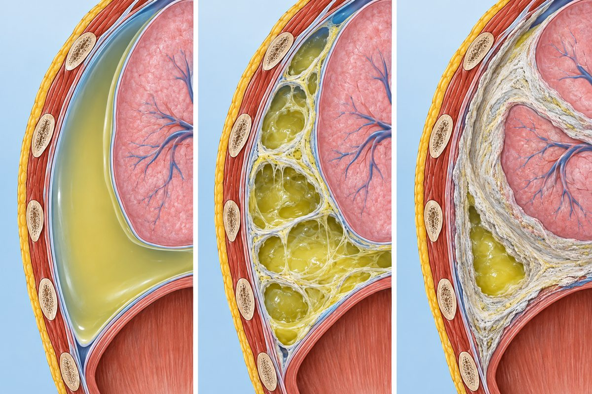
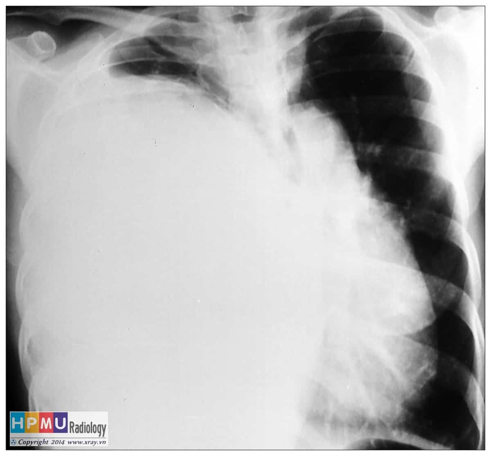
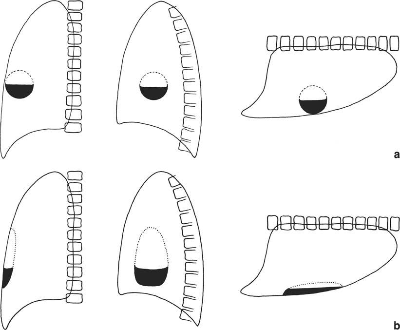
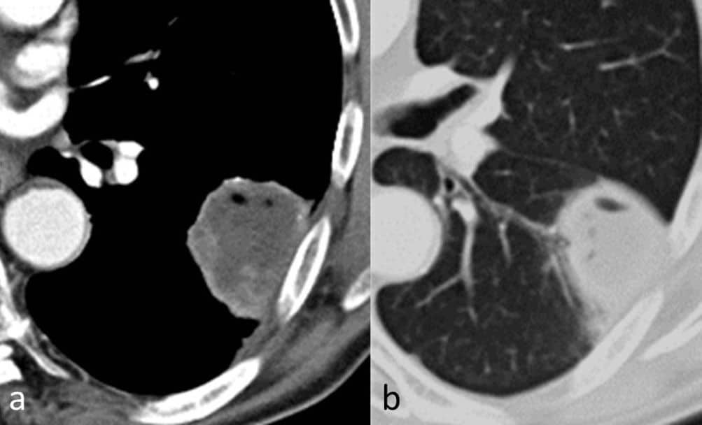
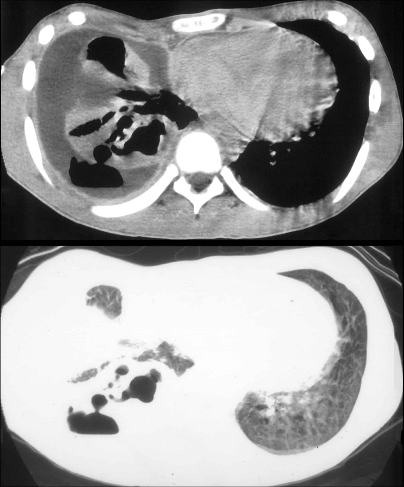
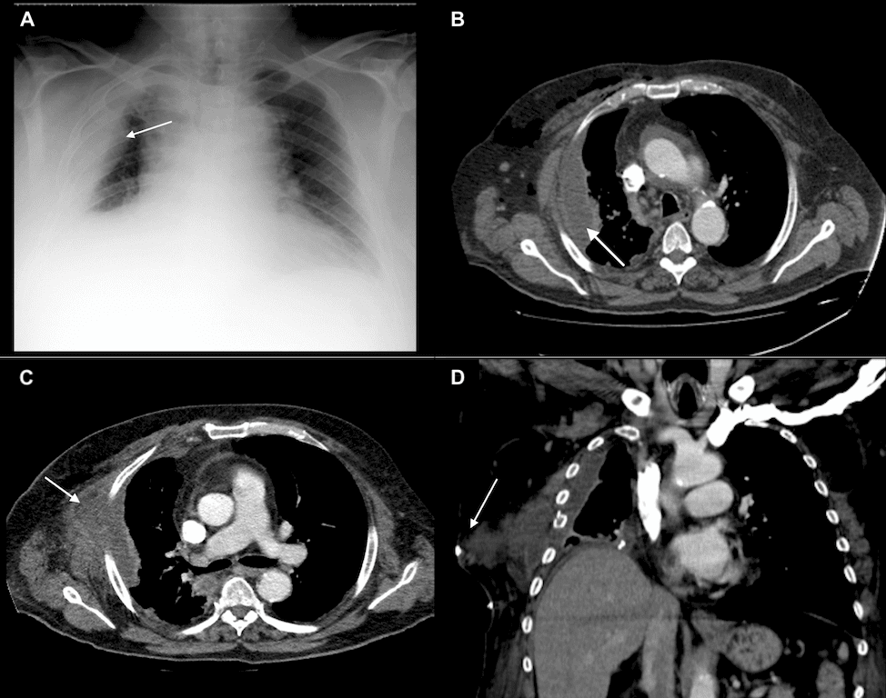

Viêm Mủ Màng Phổi
I. Đại cương
– Định nghĩa:
+ Viêm mủ màng phổi (pleural empyema) là tình trạng có mủ đại thể trong khoang màng phổi.
+ Nhiễm trùng màng phổi (pleural infection) là khái niệm rộng hơn; dịch màng phổi nhiễm khuẩn nhưng chưa có mủ đại thể không đồng nghĩa với viêm mủ màng phổi.
– Đối tượng hay gặp và yếu tố nguy cơ:
+ Bệnh gặp ở mọi lứa tuổi; ở người lớn, nguy cơ tăng theo tuổi và khi có bệnh nền.
+ Các yếu tố liên quan gồm đái tháo đường, bệnh tim phổi mạn tính, suy dinh dưỡng, nghiện rượu và suy giảm miễn dịch.
+ Trong các đoàn hệ người lớn bị nhiễm trùng màng phổi, tử vong khoảng 10% trong 30 ngày và 20% trong 1 năm; tỷ lệ có thể cao hơn ở người cao tuổi hoặc suy giảm miễn dịch.
– Tác nhân gây bệnh và đường lan đến màng phổi:
+ Tác nhân đa dạng, thường gồm các liên cầu khuẩn như phế cầu, tụ cầu vàng và vi khuẩn kỵ khí; có thể gặp nhiễm đa vi khuẩn hoặc vi khuẩn Gram âm, tùy bối cảnh mắc bệnh và dịch tễ địa phương.
+ Lao và nấm ít gặp hơn trong nhiễm trùng mủ, nhưng cần cân nhắc theo dịch tễ và tình trạng miễn dịch.
+ Đường lan thường gặp là lan kề từ viêm phổi hoặc tổn thương phổi hoại tử; ổ áp xe dưới hoành hoặc gan cũng có thể lan đến khoang màng phổi.
+ Nhiễm khuẩn có thể vào khoang màng phổi trực tiếp sau phẫu thuật, chấn thương hoặc can thiệp màng phổi; lan theo đường máu ít gặp.
+ Khoảng một phần ba số ca nhiễm trùng màng phổi ở người lớn không có viêm phổi thấy trên hình ảnh; không nên mặc định các trường hợp này lan theo đường máu.
– Phân loại giai đoạn:
+ Giai đoạn xuất tiết: dịch thường loãng, tự do trong khoang màng phổi, chưa hình thành vách.
+ Giai đoạn fibrin-mủ: vi khuẩn xâm nhập, bạch cầu và fibrin tăng, hình thành vách và các ổ dịch khu trú; dịch có thể đục hoặc thành mủ.
+ Giai đoạn tổ chức hóa: nguyên bào sợi và collagen tạo lớp xơ bao quanh khoang màng phổi, gây dày dính màng phổi và hạn chế phổi nở.
+ Các giai đoạn có thể chồng lấp; không phải trường hợp nào cũng tiến triển tuần tự qua đủ cả ba giai đoạn.
– Diễn biến tự nhiên từ tràn dịch tự do đến khu trú:
+ Dịch ban đầu có thể tự do, sau đó phân ngăn do lắng đọng fibrin và hình thành vách; diễn tiến thay đổi giữa các người bệnh.
+ Ổ dịch khu trú thường có dạng thấu kính với hai mặt lồi, hình thái thay đổi theo vị trí và khoang màng phổi, không nhất thiết có dạng tròn.
+ Khí trong khoang màng phổi có thể do rò phế quản-màng phổi, vi khuẩn sinh khí hoặc can thiệp; riêng dấu hiệu này không xác định được nguyên nhân.

© Chẩn Đoán Hình Ảnh Xray.vn
* Nguyên nhân:
– Áp xe phổi vỡ vào khoang màng phổi:
+ Ổ áp xe sát màng phổi có thể vỡ vào khoang màng phổi, gây tràn mủ-khí màng phổi hoặc viêm mủ màng phổi; không có căn cứ đủ chắc để khẳng định biến chứng này chiếm khoảng 65% các trường hợp.
+ Nhiễm trùng cũng có thể lan trực tiếp từ tổn thương phổi hoại tử qua màng phổi tạng; không nên mặc định đây là đường lan qua bạch mạch.
– Viêm phổi và tổn thương phổi phá hủy:
+ Viêm phổi là nguyên nhân thường gặp nhất; nhiễm trùng lan kề từ nhu mô phổi qua màng phổi tạng, gây tràn dịch cạnh viêm phổi và có thể tiến triển thành nhiễm trùng màng phổi hoặc viêm mủ.
+ Hoại tử phổi, nang phổi bẩm sinh bội nhiễm, hang lao, tổn thương do ký sinh trùng hoặc khối u hoại tử là những nguyên nhân ít gặp; nguy cơ tăng khi tổn thương thông với khoang màng phổi hoặc bị bội nhiễm.
– Lan từ ổ nhiễm trùng lân cận:
+ Nhiễm trùng ổ bụng, đặc biệt áp xe dưới hoành, có thể lan qua cơ hoành; các nguồn hiếm gặp khác gồm nhiễm trùng gan-mật, viêm tụy nhiễm khuẩn, thủng tạng rỗng kèm viêm phúc mạc và viêm quanh thận.
+ Viêm ruột thừa hoặc loét dạ dày-tá tràng thường chỉ liên quan khi gây viêm phúc mạc hoặc hình thành ổ áp xe dưới hoành; không nên xem các bệnh này là nguyên nhân trực tiếp thường gặp.
– Nguyên nhân toàn thân và lân cận khác:
+ Nhiễm khuẩn huyết lan theo đường máu là nguyên nhân hiếm; không mặc định các trường hợp không thấy viêm phổi trên hình ảnh đều do đường máu.
+ Nhiễm khuẩn trung thất, thành ngực hoặc viêm xương sườn, viêm tủy xương có thể lan trực tiếp vào khoang màng phổi nhưng ít gặp.
– Nhiễm trùng thứ phát sau phẫu thuật hoặc chấn thương:
+ Có thể xảy ra sau phẫu thuật phổi, trung thất, thực quản hoặc vùng bụng trên; rò phế quản-màng phổi hay rò thực quản-màng phổi có thể làm nhiễm bẩn khoang màng phổi. Viêm mủ sau cắt phổi là biến chứng nặng nhưng không nên gọi là nguyên nhân thường gặp nhất nếu không nêu rõ quần thể.
+ Tràn máu màng phổi sau chấn thương, nhất là khi máu tồn lưu hoặc khoang màng phổi bị nhiễm bẩn, làm tăng nguy cơ bội nhiễm.
II. Chẩn đoán x-quang
* Đặc điểm hình ảnh
– Dạng tràn dịch màng phổi tự do trên X quang quy ước:
+ Trên phim chụp tư thế đứng, dịch gây mờ đồng nhất vùng đáy phổi, tù góc sườn-hoành và có thể tạo bờ trên cong lõm lên trên; khi dịch nhiều, vùng mờ lan cao hoặc gần toàn bộ một bên lồng ngực.
+ Dịch tự do di chuyển theo trọng lực khi thay đổi tư thế; số lượng lớn có thể đẩy trung thất sang bên đối diện nếu không có xẹp phổi phối hợp.
– Dạng tràn dịch khu trú với hình thấu kính hai mặt lồi:
+ Đám mờ thường có dạng thấu kính hai mặt lồi, tiếp xúc thành ngực và tạo góc tù với thành ngực.
+ Dịch bị giới hạn bởi dính và các vách màng phổi nên thường không đổi vị trí theo tư thế.
+ Có thể thấy mức khí-dịch khi có rò phế quản-màng phổi, vi khuẩn sinh khí hoặc sau can thiệp vào khoang màng phổi.


=> Case lâm sàng 1:
=> Case lâm sàng 2:
=> Case lâm sàng 3:
=> Case lâm sàng 4:
=> Case lâm sàng 5:
=> Case lâm sàng 6:
=> Case lâm sàng 7:
– Tổn thương phổi kèm theo:
+ Đông đặc nhu mô phổi cùng bên có thể đi kèm tù góc sườn-hoành hoặc mờ rộng một bên lồng ngực do tràn dịch.
+ Hình ảnh gợi ý viêm phổi hoặc áp xe phổi kèm theo; đây có thể là nguồn nhiễm trùng lan kề đến khoang màng phổi.
– Dấu hiệu xơ hóa mạn tính:
+ Dày dính màng phổi có thể biểu hiện bằng dải mờ ngoại vi; xơ hóa kéo dài làm giảm thể tích bên phổi và hạn chế phổi nở.
+ Có thể kèm hẹp khoang liên sườn, nâng vòm hoành hoặc kéo trung thất về bên tổn thương do giảm thể tích.
+ Vôi hóa màng phổi có thể gặp trong di chứng viêm kéo dài nhưng không đặc hiệu cho viêm mủ màng phổi, cũng không xác định được thời gian mắc bệnh.

– Cạm bẫy thực hành trên X quang quy ước:
+ X quang không phân biệt được mủ với các loại dịch khác. Khi nghi ngờ nhiễm trùng màng phổi, cân nhắc chọc hút chẩn đoán dưới hướng dẫn siêu âm nếu lượng dịch đủ và có đường vào an toàn.
+ Đám mờ khu trú dạng thấu kính có thể nhầm với khối màng phổi, thành ngực hoặc nhu mô phổi. Dịch đã khu trú có thể không đổi theo tư thế; nên đối chiếu phim cũ và khảo sát thêm bằng siêu âm hoặc CLVT khi cần.
+ Đọc có hệ thống góc sườn-hoành, đường viền màng phổi và thể tích hai bên lồng ngực; so sánh các tư thế và phim cũ nếu có.

* Phân biệt áp xe phổi
– Phân biệt trên X quang quy ước với dấu hiệu Remy (Remy):
+ Mức dịch khí kích thước như nhau trên phim thẳng và nghiêng thì khối ở trong phổi.
+ Mức dịch khí kích thước khác nhau trên phim thẳng và nghiêng thì khối ở khoang màng phổi.
+ Cơ chế là khối trong nhu mô giữ hình cầu theo mọi hướng, trong khi dịch màng phổi bị giới hạn bởi dính và thành ngực nên thay đổi hình theo tư thế ở cấp độ vi cấu trúc.

– Phân biệt trên cắt lớp vi tính:
+ Áp xe phổi có thành dày không đều, viêm mủ màng phổi có màng phổi dày đều do lắng đọng fibrin và xơ hóa ở cấp độ vi cấu trúc.
+ Áp xe phổi tạo góc nhọn với màng phổi, viêm mủ màng phổi tạo góc tù với thành ngực.
+ Áp xe phổi thường giữ dạng hình tròn trên các mặt phẳng khác nhau, viêm mủ màng phổi thường có dạng hình thấu kính.
+ Áp xe phổi làm gián đoạn đột ngột cấu trúc phế quản do tổn thương trong nhu mô.
+ Viêm mủ màng phổi thường đè đẩy nhu mô phổi kế cận do khối dịch ngoài nhu mô choán chỗ.
+ Tổn thương chìa khóa là dấu hiệu màng phổi dày tách đôi tăng ngấm thuốc sau tiêm trên MDCT gợi ý viêm mủ màng phổi.
– Cạm bẫy thực hành khi phân biệt:
+ Không dựa vào một dấu hiệu đơn độc trên X quang quy ước vì mức dịch khí thay đổi theo lượng dịch và tư thế.
+ Khi khối lớn xóa góc và bờ màng phổi thì phải đối chiếu MDCT đa mặt phẳng trước khi kết luận.

* Biến chứng
– Rò mủ ra thành ngực và các cơ quan lân cận:
+ Viêm mủ màng phổi xuyên thành ngực (empyema necessitans) xảy ra khi nhiễm trùng lan qua màng phổi thành vào mô mềm thành ngực, tạo ổ mủ hoặc đường rò.
+ Rò phế quản-màng phổi tạo thông thương giữa khoang màng phổi và phế quản, có thể gây tràn mủ-khí màng phổi và khạc đờm mủ.
+ Lan trực tiếp đến trung thất hoặc màng tim có thể gây viêm trung thất hoặc viêm mủ màng tim; đây là những biến chứng hiếm gặp nhưng nặng.

* Viêm mủ sau cắt phổi
– Dấu hiệu sớm sau cắt phổi cần theo dõi:
+ Viêm mủ có thể xuất hiện từ vài ngày đến nhiều tháng, thậm chí nhiều năm sau phẫu thuật. Sốt, đau ngực, khó thở hoặc toàn trạng xấu đi là những dấu hiệu gợi ý nhưng không đặc hiệu; mốc ngày thứ 3 không xác định được chẩn đoán.
+ Sau cắt toàn bộ phổi, khoang hậu phẫu thường chứa khí lúc đầu rồi dịch tăng dần khi khí được hấp thu; vì vậy, dịch hoặc mức khí-dịch đơn độc có thể thuộc diễn biến hậu phẫu bình thường.
+ Trên phim nối tiếp, khoang hậu phẫu mờ nhanh bất thường, giãn rộng hoặc xuất hiện hay tăng khí sau khi đã mờ ổn định gợi ý biến chứng như viêm mủ hoặc rò phế quản-màng phổi.

– Dấu hiệu ở thời kỳ hậu phẫu ổn định:
+ Sốt cao, rét run hoặc toàn trạng xấu đi sau giai đoạn hồi phục ổn định cần gợi ý nhiễm trùng khoang màng phổi; các biểu hiện này không đặc hiệu.
+ Khí mới xuất hiện trong khoang hậu phẫu đã ổn định hoặc đã mờ hoàn toàn, hay thay đổi đột ngột thành phần khí-dịch trên phim nối tiếp, gợi ý rò phế quản-màng phổi và/hoặc nhiễm trùng; khí cũng có thể do vi khuẩn sinh khí.
+ Rò phế quản-màng phổi khởi phát sớm có thể liên quan đến hở mỏm phế quản, thiếu máu mô, nhiễm trùng hoặc chậm liền; thời điểm khởi phát đơn độc không chứng minh có lỗi kỹ thuật.
III. Chẩn đoán siêu âm
– Dày màng phổi lan tỏa:
+ Màng phổi có thể dày, tăng âm và bờ không đều; khi hai lá dính, siêu âm có thể không phân biệt rõ từng lá.
+ Dày và không đều có thể gặp trong viêm kéo dài, tổ chức hóa hoặc xơ hóa nhưng không đủ để xác định giai đoạn bệnh.
– Dịch khoang màng phổi không đồng nhất với cặn tăng âm:
+ Dịch có thể chứa hồi âm bên trong hoặc các cặn di động, phản ánh các thành phần tế bào, protein và fibrin; hình ảnh này không xác định riêng mủ.
+ Cặn có thể chuyển động hoặc xoáy theo nhịp thở; sự di động hỗ trợ nhận biết dịch có thành phần lơ lửng nhưng không loại trừ dịch khu trú nếu cặn đứng yên.
– Vách dày trong khoang dịch:
+ Vách hiện thành các dải tăng âm trong dịch, có thể chia khoang thành nhiều ngăn hoặc nối các mặt màng phổi.
+ Vách hóa và dịch khu trú gợi ý tràn dịch phức tạp; siêu âm không xác định chắc chắn giai đoạn bệnh hoặc tiên lượng chỉ dựa trên số lượng, độ dày của vách.
– Bóng khí rải rác trong khoang dịch với nhiễu ảnh dội âm (reverberation):
+ Bóng khí có thể hiện thành các chấm tăng âm, kèm bóng lưng bẩn hoặc nhiễu ảnh dội âm trong dịch.
+ Khí có thể liên quan đến rò phế quản-màng phổi, vi khuẩn sinh khí hoặc can thiệp gần đây; đây không phải dấu hiệu đặc hiệu của rò.
– Cạm bẫy thực hành trên siêu âm và POCUS:
+ Cặn di động có thể nhầm với khối đặc hoặc phổi xẹp trong dịch; đánh giá hình thái và sự thay đổi khi quan sát động, không dựa riêng vào tính di động.
+ Vách mỏng có thể bị bỏ sót nếu cài đặt độ sâu hoặc độ lợi không phù hợp hay chỉ khảo sát một mặt cắt; cần quét nhiều hướng.
+ Bóng khí trong dịch có thể nhầm với vôi hóa thành ngực hoặc nhiễu ảnh; xác định vị trí của chúng trong khoang dịch trên nhiều mặt cắt và đối chiếu tiền sử can thiệp.
+ Khi có chỉ định chọc hút, POCUS giúp chọn túi dịch tiếp cận an toàn và tránh các cấu trúc lân cận; không quyết định chọc dò chỉ dựa vào cặn hoặc vách trên siêu âm.
=> Case lâm sàng 1:
=> Videos viêm mủ màng phổi:
IV. Chẩn đoán CLVT
– Dịch khoang màng phổi trên MDCT:
+ Dịch có thể còn tự do ở giai đoạn sớm; khi lắng đọng fibrin và hình thành vách, dịch thường phân ngăn hoặc khu trú, có cấu hình thuôn dài, áp sát khoang màng phổi.
+ Đậm độ dịch có thể không đồng nhất do thành phần tế bào, protein và mảnh vụn trong dịch viêm; hình ảnh này không xác định chắc chắn dịch là mủ. MDCT cũng kém nhạy hơn siêu âm trong phát hiện các vách mỏng.
+ Các bóng khí nhỏ trong dịch có thể liên quan đến rò phế quản-màng phổi, vi khuẩn sinh khí hoặc khí đưa vào khoang màng phổi sau can thiệp. Mức khí-dịch hình thành khi khí và dịch cùng hiện diện, không chứng minh khoang đã cố định do dính.
– Màng phổi dày ngấm thuốc sau tiêm:
+ Dày màng phổi có thể liên quan đến lắng đọng fibrin và phản ứng viêm; khi tổ chức hóa, lắng đọng collagen góp phần hình thành lớp xơ và hạn chế phổi nở.
+ Ngấm thuốc phản ánh tăng tưới máu và tính thấm mạch trong phản ứng viêm; có thể kèm tăng đậm độ hoặc thâm nhiễm mỡ ngoài màng phổi.
– Dấu hiệu tách đôi màng phổi (split pleura sign):
+ Sau tiêm thuốc cản quang, màng phổi thành và lá tạng dày, ngấm thuốc riêng biệt, bị tách bởi ổ dịch trong khoang màng phổi.
+ Dấu hiệu này ủng hộ vị trí tổn thương ở khoang màng phổi và làm tăng khả năng nhiễm trùng; hữu ích khi phân biệt với áp xe phổi nhưng không tự nó chứng minh dịch là mủ hoặc loại trừ tuyệt đối tổn thương nhu mô sát màng phổi.
– Cạm bẫy thực hành trên MDCT:
+ Ở giai đoạn sớm, màng phổi có thể chưa dày hoặc ngấm thuốc rõ nên không thấy dấu hiệu tách đôi; không loại trừ nhiễm trùng nếu thiếu dấu hiệu này. CT có tiêm thuốc cản quang, lát cắt mỏng và tái tạo đa mặt phẳng giúp đánh giá màng phổi tốt hơn.
+ Dày và ngấm thuốc màng phổi không đặc hiệu cho nhiễm trùng; có thể gặp trong lao, bệnh ác tính hoặc các nguyên nhân viêm khác. Cần đối chiếu lâm sàng và phân tích dịch khi có chỉ định, nếu có thể tiếp cận an toàn dưới hướng dẫn siêu âm.
+ Bóng khí nhỏ có thể nhầm với hiệu ứng thể tích riêng phần hoặc khí trong nhu mô phổi sát ổ dịch; kiểm tra trên nhiều mặt phẳng để xác định vị trí, đồng thời lưu ý tiền sử can thiệp.


=> Case lâm sàng 1:
=> Case lâm sàng 2:
=> Case lâm sàng 3:


=> Case lâm sàng 4:


Tài liệu tham khảo
* Differentiating lung abscess and empyema: radiography and computed tomography – DD Stark, MP Federle, PC Goodman
* Ultrasonography of pleural pathologies in children – how to avoid diagnostic pitfalls – K. Papierowska, M. Brzewski, P. Bombinski
* Appearances of Empyema on Computed Tomography – J. M. Franklin, J. Purcell-Jones, E. Helm
* From traumatic haemothorax to empyema: The thick and thin of it – M. McGuiness, M. Handy, P. Cleland; BRISBANE/AU
* Computed tomography of the chest wall, pleura, and pulmonary parenchyma in infants and children – Kirks DR, Korobkin M
* Thoracic CT: diagnosis of the pleura and thoracic wall lesions – Kubota H, Ohgushi M
* Post-resection complications: abscesses, empyemas, bronchopleural fistulas – Egyud M, Suzuki K
* Role of routine computed tomography in paediatric pleural empyema – A Jaffe
* Grainger & Allison’s Diagnostic Radiology – Andreas Adam